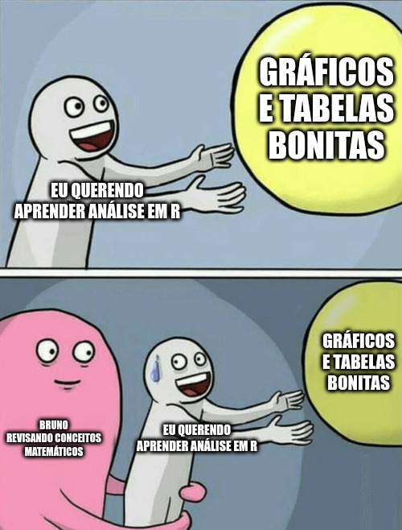
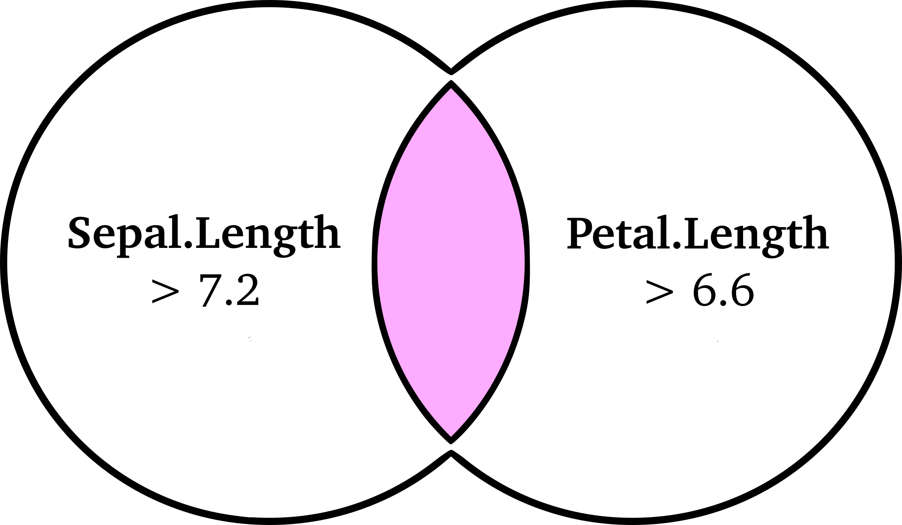
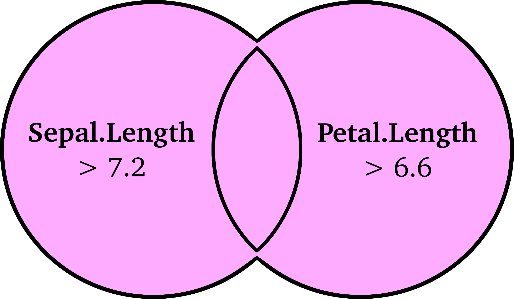

[1] 15 16 32Fundamentos de estatística em R
Semana 2
Bruno Montezano
Programa de Pós-Graduação em Psiquiatria e Ciências do Comportamento Universidade Federal do Rio Grande do Sul
21 de março de 2023
Conteúdo de hoje
- Revisão de conceitos matemáticos
- Variáveis, vetores e matrizes
- Medidas de tendência central e dispersão
- Programação
- Indexação e subconjuntos
- Expressões lógicas
Revisão de conceitos matemáticos
Variáveis
Variáveis são símbolos que representam conjuntos de um ou mais elementos que podem assumir qualquer quantidade de valores.
- Letras como \(x\), \(y\) e \(z\) são comumente usadas para indicar variáveis
- Por exemplo: \(x = 3\)
- Letras maiúsculas (\(X\)) ou letras com um índice (\(x_i\)) referem-se a variáveis com múltiplos valores — ou seja, com dimensões
- Por exemplo: \(X = x_i = (15, 16, 32)\)
- Variáveis com uma dimensão (comprimento) são chamadas de vetor
- Variáveis como \(x_i\) são usadas para indexar elementos de vetores
- \(i\) é uma variável que indica a posição indexada
- Por exemplo: \(x_1 = 15, x_2 = 16, x_3 = 32\)
Vetores em R
Matrizes
Matrizes são uma tabela retangular de números. Geralmente, elas são identificadas por uma letra maiúscula, como \(X\).
\[X_{i,j} = \begin{bmatrix}x_{1,1} & x_{1,2}\\x_{2,1} & x_{2,2}\end{bmatrix}\]
Matrizes são indexadas com subscritos para linhas, colunas (ou seja, \(x_{ij}\)).
\[X = \begin{bmatrix}9 & 25\\14 & 76\end{bmatrix} \;\;\; x_{2,1} = 14\]
\[X = \begin{bmatrix}5 & 9 & 8\\3 & 2 & 5\\0 & 1 & 4\end{bmatrix} \;\;\; \text{Qual o elemento } x_{3,2}?\]
Matrizes em R
[,1] [,2] [,3]
[1,] 5 9 8
[2,] 3 2 5
[3,] 0 1 4Percebam que o R nos mostra os índices nas margens para facilitar a indexação.
Somatório
\[\sum_{i=1}^{n}x_i\]
Dado \(x = [9, 12, 12, 14, 27]\):
\[\sum_{i=1}^{n}x_i = x_1 + x_2 + x_3 + x_4 + x_5 = 9 + 12 + 12 + 14 + 27 = 74\]
Medidas de tendência central
Média
A média (aritmética) é o valor esperado de uma variável.
\[\bar{x} = \frac{1}{n}\sum_{i=1}^{n}x_{i}\]
Se você extrair elementos aleatoriamente dessa variável, a média seria o chute menos errado que você poderia fazer sobre esse valor1.
Dito de outra forma, as diferenças positivas e negativas entre todos os valores e a média equivalem entre si.
Mediana
O valor para o qual não mais da metade dos valores é superior ou inferior1.
A mediana tem essa fórmula esquisita:
\[m(x_i) = \begin{cases} x_{\frac{n+1}{2}},& \text{se } n \text{ ímpar}\\ \frac{1}{2}(x_{\frac{n}{2}} + x_{\frac{n}{2} + 1}), &\text{se } n \text{ par}\end{cases}\]
Moda
A moda é o valor mais frequente na variável.
Existem fórmulas para a moda, mas elas não são nada intuitivas, apesar da moda ser a medida de tendência central mais intuitiva.
Valores extremos
A média é sensível a valores extremos:
Isso significa que a mediana pode ser uma “média” mais útil quando os dados têm valores extremos.
Isto é comum com variáveis como renda e números de episódios auto-relatados.
Medidas de dispersão
Variância
A variância mede como os dados estão dispersos em torno da média. Normalmente usamos a variância amostral:
\[ s^2 = \frac{\sum (x_i - \bar{x})^2}{n - 1} \]
Vamos ver isso melhor quando estudarmos distribuições.
Se todos os valores são iguais, a variância é zero.
Desvio padrão
O desvio padrão (\(s\) ou \(sd\), ou \(dp\) em português) é simplesmente a raíz quadrada da variância:
\[s = sd = dp = \sqrt{s^2}\]
Você pode interpretar como a distância “típica” dos valores em relação à média.
Retomando indexação e subconjuntos
Nomes para extrair colunas
Nós também podemos usar os nomes de colunas para selecioná-las na base:
Species Petal.Length
1 setosa 1.4
2 setosa 1.4
3 setosa 1.3
4 setosa 1.5
5 setosa 1.4
6 setosa 1.7Por padrão, a função head() mostra as seis primeiras linhas da base.
Colunas individuais
Se vocês criarem um subconjunto de apenas uma coluna, um vetor será retornado ao invés de um dataframe:
[1] 3.5 3.0 3.2 3.1 3.6 3.9 3.4 3.4 2.9 3.1 3.7 3.4 3.0 3.0 4.0 4.4 3.9 3.5
[19] 3.8 3.8 3.4 3.7 3.6 3.3 3.4 3.0 3.4 3.5 3.4 3.2 3.1 3.4 4.1 4.2 3.1 3.2
[37] 3.5 3.6 3.0 3.4 3.5 2.3 3.2 3.5 3.8 3.0 3.8 3.2 3.7 3.3 3.2 3.2 3.1 2.3
[55] 2.8 2.8 3.3 2.4 2.9 2.7 2.0 3.0 2.2 2.9 2.9 3.1 3.0 2.7 2.2 2.5 3.2 2.8
[73] 2.5 2.8 2.9 3.0 2.8 3.0 2.9 2.6 2.4 2.4 2.7 2.7 3.0 3.4 3.1 2.3 3.0 2.5
[91] 2.6 3.0 2.6 2.3 2.7 3.0 2.9 2.9 2.5 2.8 3.3 2.7 3.0 2.9 3.0 3.0 2.5 2.9
[109] 2.5 3.6 3.2 2.7 3.0 2.5 2.8 3.2 3.0 3.8 2.6 2.2 3.2 2.8 2.8 2.7 3.3 3.2
[127] 2.8 3.0 2.8 3.0 2.8 3.8 2.8 2.8 2.6 3.0 3.4 3.1 3.0 3.1 3.1 3.1 2.7 3.2
[145] 3.3 3.0 2.5 3.0 3.4 3.0Colunas em dataframes também podem ser acessadas usando os nomes e o operador de extração $:
[1] 3.5 3.0 3.2 3.1 3.6 3.9 3.4 3.4 2.9 3.1 3.7 3.4 3.0 3.0 4.0 4.4 3.9 3.5
[19] 3.8 3.8 3.4 3.7 3.6 3.3 3.4 3.0 3.4 3.5 3.4 3.2 3.1 3.4 4.1 4.2 3.1 3.2
[37] 3.5 3.6 3.0 3.4 3.5 2.3 3.2 3.5 3.8 3.0 3.8 3.2 3.7 3.3 3.2 3.2 3.1 2.3
[55] 2.8 2.8 3.3 2.4 2.9 2.7 2.0 3.0 2.2 2.9 2.9 3.1 3.0 2.7 2.2 2.5 3.2 2.8
[73] 2.5 2.8 2.9 3.0 2.8 3.0 2.9 2.6 2.4 2.4 2.7 2.7 3.0 3.4 3.1 2.3 3.0 2.5
[91] 2.6 3.0 2.6 2.3 2.7 3.0 2.9 2.9 2.5 2.8 3.3 2.7 3.0 2.9 3.0 3.0 2.5 2.9
[109] 2.5 3.6 3.2 2.7 3.0 2.5 2.8 3.2 3.0 3.8 2.6 2.2 3.2 2.8 2.8 2.7 3.3 3.2
[127] 2.8 3.0 2.8 3.0 2.8 3.8 2.8 2.8 2.6 3.0 3.4 3.1 3.0 3.1 3.1 3.1 2.7 3.2
[145] 3.3 3.0 2.5 3.0 3.4 3.0Extrair: $
Vocês podem ter notado o $ antes ao ter usado o str():
'data.frame': 150 obs. of 5 variables:
$ Sepal.Length: num 5.1 4.9 4.7 4.6 5 5.4 4.6 5 4.4 4.9 ...
$ Sepal.Width : num 3.5 3 3.2 3.1 3.6 3.9 3.4 3.4 2.9 3.1 ...
$ Petal.Length: num 1.4 1.4 1.3 1.5 1.4 1.7 1.4 1.5 1.4 1.5 ...
$ Petal.Width : num 0.2 0.2 0.2 0.2 0.2 0.4 0.3 0.2 0.2 0.1 ...
$ Species : Factor w/ 3 levels "setosa","versicolor",..: 1 1 1 1 1 1 1 1 1 1 ...Como nas margens das matrizes, trata-se de uma dica que você pode selecionar colunas dessa forma.
Combinando estilos de criar subconjuntos
Aqui eu usei os colchetes para selecionar apenas as 15 primeiras observações dessa coluna.
Nós podemos misturar os estilos de subconjuntos! Nesse exemplo, eu inseri apenas um valor (sem índice de coluna) porque os vetores possuem apenas uma dimensão (que é o comprimento).
- O R processa primeiro o
$Petal.Width - E depois processa o
[1:15]
Se você receber erros sobre “número incorreto de dimensões”, verifique por algum erro no seu subconjunto!
Praticando combinações de condições lógicas
E: &

Ou: |
 Sepal.Length Sepal.Width Petal.Length Petal.Width Species
106 7.6 3.0 6.6 2.1 virginica
108 7.3 2.9 6.3 1.8 virginica
118 7.7 3.8 6.7 2.2 virginica
119 7.7 2.6 6.9 2.3 virginica
123 7.7 2.8 6.7 2.0 virginica
131 7.4 2.8 6.1 1.9 virginica
132 7.9 3.8 6.4 2.0 virginica
136 7.7 3.0 6.1 2.3 virginicaTarefa de casa
Criar um subconjunto da base
irisapenas com as plantas da espécievirginicae que possuam uma largura da pétala (Petal.Width) menor ou igual a 1,9cm. Lembrem de usar os colchetes, operadores (==,&,<=), que o ponto de decimal do R não é a vírgula (dica: é o.). Armazene esse subconjunto em um objeto chamadovirginicas_estreitas.A partir da base
iris, calcule a média e o desvio padrão do comprimento da sépala (Sepal.Length) das plantas da espécieversicolor. Lembrem do$e das funções para calcular média e desvio padrão!